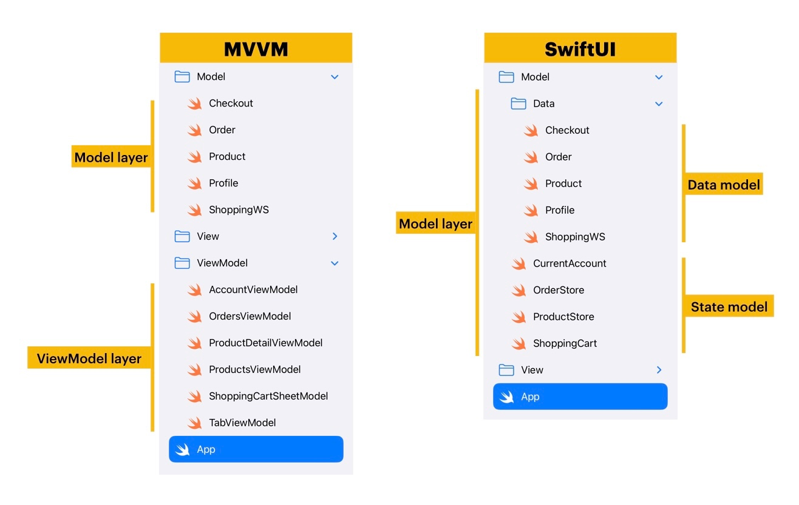
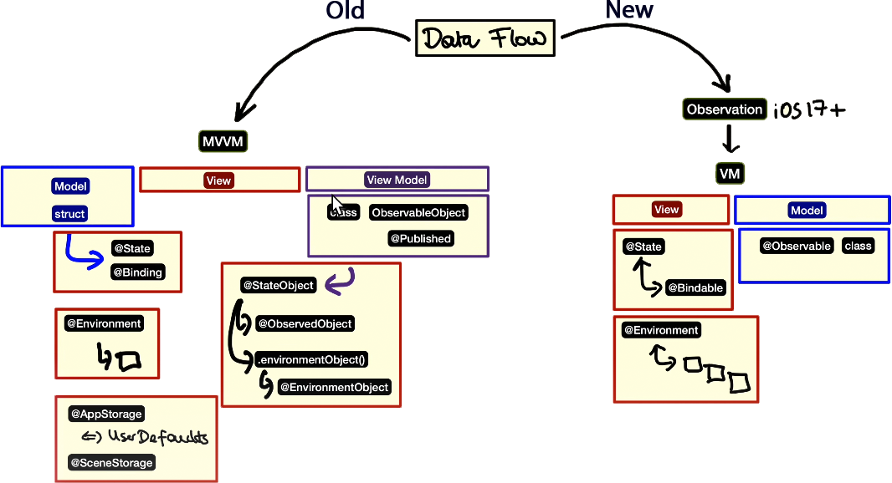
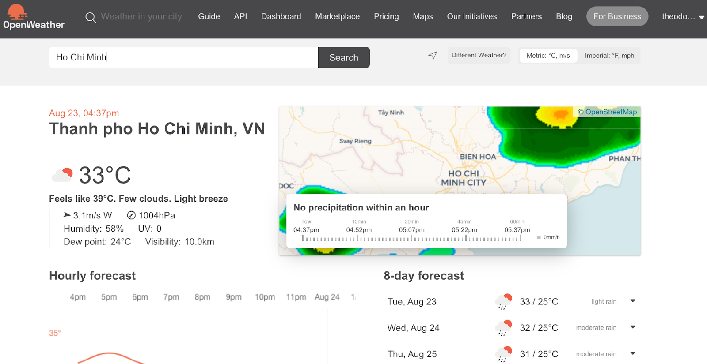
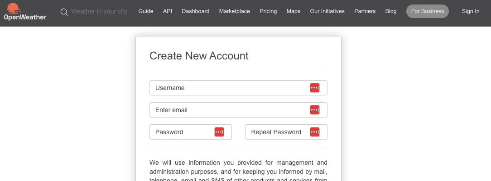
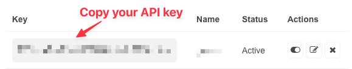
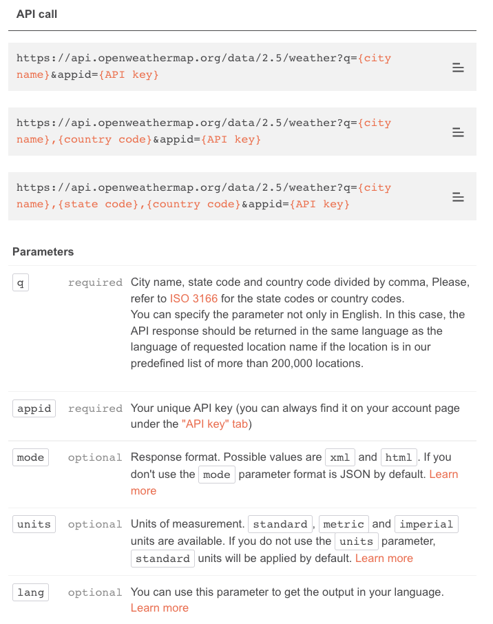

🎯 Objective
Goal of This Lab
Today's lab is designed to give you hands-on practice with the Model-View-ViewModel (MVVM) architecture. The goal is not just to follow steps, but to understand why MVVM is a powerful pattern for building robust, scalable, and maintainable SwiftUI applications.
Your task is to refactor several projects from a traditional, mixed-logic approach into a clean MVVM structure, correctly separating data (Model), UI (View), and business logic (ViewModel).
A Simple Analogy for MVVM
Think of a restaurant. The Model is the raw ingredients in the kitchen (flour, tomatoes, cheese). The View is the menu the customer sees and the waiter who takes the order. The ViewModel is the chef who takes the order ("Margherita Pizza"), prepares the ingredients according to the recipe (the business logic), and hands the finished pizza to the waiter to be displayed. The waiter doesn't need to know how to cook, and the chef doesn't need to talk to the customer.
🔑 Key Concepts & Property Wrappers
Understanding SwiftUI's Data Flow Tools
SwiftUI provides a powerful set of tools, primarily through property wrappers, to manage the state of your application. Understanding their roles is crucial for implementing MVVM correctly. Think of them as special labels that tell SwiftUI how to manage a piece of data.
- View State: Manages data that is private and specific to a single view.
@State: The most common property wrapper. Use it for simple data (like aStringfor a text field, anIntfor a counter, or aBoolfor a toggle) that a view owns and modifies. When a@Stateproperty changes, the view automatically re-renders its UI to reflect the change.
When to use: For simple, local view state that isn't shared.@Binding: Creates a derived, two-way connection to another source of truth (often a parent's@Stateor a ViewModel's property). It allows a child view to read and write a value that it doesn't own, like passing a light switch to a child view so it can turn a lamp in the parent view on or off.
When to use: In child views that need to modify data owned by a parent view.
- Shared State / Model Data: Manages more complex, reference-type data (classes) that can be shared across multiple views. This is the core of MVVM's state management.
@StateObject: Use this to create and own an instance of anObservableObject(your ViewModel) within a view. SwiftUI ensures the object's lifecycle is tied to the view, meaning it persists even when the view struct is re-created. This is the correct choice when a view is the "source of truth" for a ViewModel.
When to use: The first time you create a ViewModel in a view.@ObservedObject: Use this when a view needs to observe and react to an existing instance of anObservableObjectthat it receives from a parent view. The view does not own the object's lifecycle.
When to use: When a view is passed a ViewModel from a parent view.@EnvironmentObject: A powerful dependency injection tool. It allows you to inject a sharedObservableObjectinto the entire view hierarchy, making it accessible to any child view without needing to pass it down manually through every layer (a process known as "prop drilling").
When to use: For data that many different views deep in your hierarchy need to access, like user settings or authentication status.
- Persistent State: Manages data that needs to persist across app launches.
@AppStorage: A convenient wrapper forUserDefaults. Ideal for storing simple, non-sensitive user preferences like a dark mode setting or a high score.
When to use: For simple user settings that should be remembered when the app closes.
📝 Task 1: Refactoring a Counter App from MVC to MVVM
Objective
You will start with a basic SwiftUI application implemented using the MVC (Model-View-Controller) design pattern. Your task is to refactor it using the MVVM (Model-View-ViewModel) architecture. This will provide a foundational understanding of how MVVM organizes and separates concerns.
1. Starter Project (The "MVC" Anti-Pattern)
Explanation: In this initial code, the CounterView is doing too much. It holds the Counter model directly and contains the logic (counter.value += 1) inside the button's action. For a simple app, this might seem fine, but as apps grow, this approach becomes messy, hard to test, and difficult to debug. Imagine if this view also had to handle user profiles and settings—it would become a tangled mess!
Model (Data structure):
struct Counter {
var value: Int
}View (User Interface with embedded logic):
import SwiftUI
struct CounterView: View {
@State private var counter = Counter(value: 0) // View owns the model state
var body: some View {
VStack(spacing: 20) {
Text("Count: \(counter.value)")
.font(.largeTitle)
Button("Increment") {
counter.value += 1 // Business logic is inside the view
}
}
.padding()
}
}2. Refactoring to MVVM
a. Model (Unchanged):
Explanation: The Model's role is purely to define the data structure. It should not contain any business logic. In this case, it's perfect as is.
struct Counter {
var value: Int
}b. ViewModel (The Brains):
Explanation: The ViewModel acts as the bridge. It conforms to ObservableObject so that SwiftUI views can subscribe to its changes. The @Published property wrapper automatically announces any changes to the counter property, causing any observing views to re-render. The increment() function contains the business logic, neatly separated from the UI.
import Foundation
class CounterViewModel: ObservableObject {
@Published var counter = Counter(value: 0)
// Business Logic
func increment() {
counter.value += 1
}
}c. View (The UI Layer):
Explanation: The View is now much "dumber." Its only job is to display the data from the ViewModel and send user actions (like button taps) to the ViewModel. We use @StateObject because this CounterView is the first view to use the CounterViewModel and should be responsible for creating and owning it.
import SwiftUI
struct CounterView: View {
@StateObject var viewModel = CounterViewModel()
var body: some View {
VStack(spacing: 20) {
Text("Count: \(viewModel.counter.value)") // Reads from ViewModel
.font(.largeTitle)
Button("Increment") {
viewModel.increment() // Sends action to ViewModel
}
}
.padding()
}
}Your Task: Extend the Functionality
Now, apply what you've learned to extend the app:
- Add more logic to the ViewModel: Open
CounterViewModel.swiftand add two new functions:decrement()andreset(). - Update the View: In
CounterView.swift, add two new buttons for "Decrement" and "Reset". Connect them to the new functions in your ViewModel. Consider using anHStackto arrange the buttons neatly. - (Optional) Add Animation: In
CounterView, try adding the.animation(.default, value: viewModel.counter.value)modifier to theTextview to see how easily SwiftUI can animate state changes.
Pro Tip: The Single Responsibility Principle
This refactoring is a perfect example of the Single Responsibility Principle. The View's responsibility is to display UI. The ViewModel's responsibility is to handle presentation logic. The Model's responsibility is to hold data. By keeping these separate, our code becomes cleaner, more modular, and easier to manage.
Questions for Reflection (with hints):
- Why is it beneficial to separate business logic from the view?
Hint: Think about Testing (you can test the ViewModel without any UI), Reusability (could another view use the same ViewModel?), and Complexity (what happens when logic gets complicated?). - How does the
@StateObjectproperty wrapper help with MVVM in SwiftUI?
Hint: It ensures the ViewModel's lifecycle is tied to the view's lifecycle, preventing it from being accidentally destroyed and recreated during view updates. - How does MVVM affect the reusability and maintainability of our code?
Hint: With clear separation, you can change the UI (View) without touching the business logic (ViewModel), and vice-versa. This makes updates and bug fixes much safer and easier.
✅ Task 2: Designing a To-Do List App with MVVM
Objective
Build a slightly more complex app from scratch using the MVVM pattern. This will solidify your understanding of how the components work together to manage a list of data.
Getting Started
Create a new SwiftUI project in Xcode named "MVVMToDoList".
1. Design the Model
Explanation: This is our data blueprint. Each Task has a unique ID (essential for lists in SwiftUI), a title, an optional description, and a completion status. Conforming to Codable is for the optional persistence challenge, and Identifiable is for SwiftUI to track items in a list.
import Foundation
struct Task: Codable, Identifiable {
var id: UUID = UUID()
var title: String
var description: String?
var isDone: Bool = false
}2. Implementing the ViewModel
Explanation: The TaskListViewModel manages the array of tasks. It exposes the tasks array as a @Published property and provides functions (addTask, deleteTask, toggleTaskDone) that act as a clean API for the View to interact with the data. The View never modifies the tasks array directly.
import Foundation
class TaskListViewModel: ObservableObject {
@Published var tasks: [Task] = []
func addTask(title: String, description: String?) {
let task = Task(title: title, description: description)
tasks.append(task)
}
func deleteTask(at offsets: IndexSet) {
tasks.remove(atOffsets: offsets)
}
func toggleTaskDone(at index: Int) {
tasks[index].isDone.toggle()
}
}3. Designing the View
TaskRowView (Child View):
Explanation: This view is responsible for displaying a single task. It uses @Binding because it needs to reflect changes made in the parent (like toggling the isDone status) and potentially allow for edits in the future.
import SwiftUI
struct TaskRowView: View {
@Binding var task: Task
var body: some View {
HStack {
VStack(alignment: .leading) {
Text(task.title)
.font(.headline)
if let description = task.description, !description.isEmpty {
Text(description)
.font(.subheadline)
}
}
Spacer()
if task.isDone {
Image(systemName: "checkmark.circle.fill")
.foregroundColor(.green)
}
}
.padding()
}
}
#Preview {
TaskRowView(task: .constant(Task(title: "Sample Task", description: "This is a description.", isDone: false)))
}TaskListView (Parent View):
Explanation: This view owns the TaskListViewModel using @StateObject. It iterates over the tasks from the ViewModel to create the list. All user actions, like adding, deleting, or toggling a task, are forwarded to the ViewModel to handle.
import SwiftUI
struct TaskListView: View {
@StateObject var viewModel: TaskListViewModel = TaskListViewModel()
@State private var newTaskTitle: String = ""
@State private var newTaskDescription: String = ""
var body: some View {
NavigationView {
List {
ForEach(viewModel.tasks.indices, id: \.self) { index in
Button(action: {
viewModel.toggleTaskDone(at: index)
}) {
TaskRowView(task: $viewModel.tasks[index])
}
}
.onDelete(perform: viewModel.deleteTask)
HStack {
TextField("New task title", text: $newTaskTitle)
TextField("Description (optional)", text: $newTaskDescription)
Button("Add") {
viewModel.addTask(title: newTaskTitle, description: newTaskDescription)
newTaskTitle = ""
newTaskDescription = ""
}
}
}
.navigationBarTitle("Tasks")
.navigationBarItems(trailing: EditButton())
}
}
}
#Preview {
TaskListView()
}4. Additional Exercises (Optional)
- Styling: Experiment with different
ListStyles, add custom fonts, or change the color of the checkmark. - Validation: In the "Add" button's action within
TaskListView, add a simple check:if !newTaskTitle.isEmpty { ... }. You could also disable the button if the title is empty. - Persistence: Follow the hints in the lab PDF to make your
TaskmodelCodableand addsaveTasks()andloadTasks()methods to your ViewModel. Call these methods whenever the task list is modified.
▶️ Click to view hints for the persistence task (if you get stuck)
Task - Make the Task struct to be Codable. The Task struct needs to be Codable because it allows for easy encoding to and decoding from a format that can be stored in UserDefaults:
import Foundation
struct Task: Codable {
var id: UUID = UUID()
var title: String
var description: String?
var isDone: Bool = false
}Let's make the ViewModel that will save the tasks using userDefaults after every operation related to tasks. The Task instances are being saved to UserDefaults as Data and later retrieved from it.:
import Foundation
class TaskListViewModel: ObservableObject {
@Published var tasks: [Task] = []
private let userDefaultsKey = "taskList"
init() {
loadTasks()
}
func addTask(title: String, description: String?) {
let task = Task(title: title, description: description)
tasks.append(task)
saveTasks()
}
func deleteTask(at offsets: IndexSet) {
tasks.remove(atOffsets: offsets)
saveTasks()
}
func toggleTaskDone(at index: Int) {
tasks[index].isDone.toggle()
saveTasks()
}
private func saveTasks() {
if let encodedData = try? JSONEncoder().encode(tasks) {
UserDefaults.standard.set(encodedData, forKey: userDefaultsKey)
}
}
private func loadTasks() {
if let savedData = UserDefaults.standard.data(forKey: userDefaultsKey),
let decodedData = try? JSONDecoder().decode([Task].self, from: savedData) {
tasks = decodedData
}
}
}Here's a breakdown:
- Encoding (Serialization): When you want to save tasks, you convert (encode) the array of tasks (
[Task]) intoDatausingJSONEncoder().encode(tasks). This requires theTaskstruct to conform to theEncodableprotocol. - Decoding (Deserialization): When you want to load tasks from
UserDefaults, you retrieve the storedDataand convert (decode) it back to an array ofTaskinstances usingJSONDecoder().decode([Task].self, from: savedData). This requires theTaskstruct to conform to theDecodableprotocol.
Now, you can try to create some tasks and toggle “done” for some tasks. After that, you try to close the app and open it again. Hopefully, all of the tasks are still there as they are saved and loaded from the userDefaults.
🌳 Task 3: Integrating @EnvironmentObject
Objective
Modify your existing MVVM and SwiftUI To-Do list app to use @EnvironmentObject instead of @StateObject to manage the state and actions of your tasks.
1. Create the ViewModel at the Top Level
In your main App file (MVVMToDoListApp.swift), you will create an instance of TaskListViewModel. This instance will be used globally in your SwiftUI application. Here's how you can do it:
@main
struct MVVMToDoListApp: App {
@StateObject private var viewModel = TaskListViewModel()
var body: some Scene {
WindowGroup {
TaskListView()
.environmentObject(viewModel)
}
}
}In the above code:
- We declared an instance of
TaskListViewModelwith@StateObject, which signifies that this instance will own the object and manage its life cycle. - We then used
.environmentObject(viewModel)to inject the view model into the environment so that it can be accessed by views in the view hierarchy.
2. Accessing the ViewModel in TaskListView
Now, inside your TaskListView, instead of creating a new instance of TaskListViewModel, you will declare a property to hold the environment object like so:
struct TaskListView: View {
@EnvironmentObject var viewModel: TaskListViewModel
@State private var newTaskTitle: String = ""
@State private var newTaskDescription: String = ""
// ... (rest of the code remains the same)
}The @EnvironmentObject property wrapper will look up the environment for an object of the specified type (TaskListViewModel in this case) and get a reference to it. Now your view has a reference to the viewModel that is shared across the entire app.
3. Test Your Changes
Once you have made the changes, test your application thoroughly to make sure that the ViewModel is working correctly as an environment object.
- Add, delete, and toggle tasks to confirm the correct working of the ViewModel.
- Try accessing the ViewModel in a new view to confirm that the environment object is being passed down correctly.
Remember, any views that access the environment object must be within the view hierarchy where the object was injected. If not, the app will crash at runtime. For example, in our case, the TaskListView preview will crash due to missing the environment object of TaskListViewModel. In order to fix this, you need to pass in a TaskListViewModel object to this view just like how you create TaskListViewModel() object and pass it in TaskListView using .environmentObject(). In short, in the preview you just need to do this:
#Preview {
TaskListView()
.environmentObject(TaskListViewModel())
}In the above snippet:
- We've modified the
TaskListView_Previewsto include a.environmentObjectmodifier with a new instance ofTaskListViewModel. This will inject a view model instance into the environment for the preview to use, hence preventing the crash. - We create a new instance of
TaskListViewModeland supply it to the.environmentObjectmodifier. This is crucial as it allows the preview to have access to aTaskListViewModelinstance, which it requires to function correctly.
After making this change, your preview should work correctly, and you will be able to see your TaskListView preview without any crashes. Remember to do similar changes wherever previews for views that depend on the environment object are defined.
Note:
By following these instructions, you will successfully migrate your project from using @StateObject to @EnvironmentObject, making it easier to manage shared data between different views in your SwiftUI application.
🚀 Task 4: The New Observation Framework
Objective
Adapt your project to use the modern, simpler, and more performant Observation framework introduced in iOS 17. This isn't just a syntax update; it's a fundamental improvement to data flow in SwiftUI.
1. The ViewModel: From ObservableObject to @Observable
The core of the new framework is the @Observable macro. It replaces the ObservableObject protocol and the @Published property wrapper, dramatically simplifying your code.
Before (The Old Way):
import Combine // Required for ObservableObject
class TaskListViewModel: ObservableObject {
@Published var tasks: [Task] = []
@Published var filterText: String = ""
}After (The Modern Way):
import Observation // Don't forget to import!
@Observable
class TaskListViewModel {
var tasks: [Task] = []
var filterText: String = ""
// All business logic (addTask, deleteTask, etc.) remains the same.
}What's Happening Under the Hood?
The @Observable macro rewrites your class at compile time to add observation support to every property automatically. You no longer need to manually mark which properties should trigger UI updates. This reduces boilerplate and eliminates a common source of bugs.
2. The View: Simplifying State Ownership
When a view "owns" a ViewModel (i.e., it creates the instance), the property wrapper changes from @StateObject to the familiar @State. SwiftUI recognizes that the class is @Observable and automatically manages its lifecycle correctly, preventing it from being destroyed during view updates.
Before (`@StateObject`):
struct TaskListView: View {
@StateObject var viewModel = TaskListViewModel()
// ... view body ...
}After (`@State`):
struct TaskListView: View {
@State private var viewModel = TaskListViewModel()
// ... view body ...
}3. Shared State: A Clearer Approach with @Environment and @Bindable
For state shared across many views, the syntax for injecting, accessing, and binding is also modernized.
a. Injecting the Object (in your App file and Preview):
The .environmentObject() modifier is replaced by the simpler .environment() modifier.
Before: .environmentObject(viewModel)
After: .environment(viewModel)
b. Accessing and Binding in the View:
This is where the new pattern shines. You now use a two-step process that makes your code's intent much clearer:
- Access the read-only object from the environment with
@Environment. - If you need to create two-way bindings (for a
TextField,Toggle, etc.), create a temporary, bindable version inside the `body` using the@Bindableproperty wrapper.
Example Implementation:
struct TaskListView: View {
// 1. Access the shared ViewModel from the environment.
@Environment(TaskListViewModel.self) var viewModel
var body: some View {
// 2. Create a bindable wrapper ONLY for views that need it.
@Bindable var viewModel = viewModel
NavigationView {
VStack {
// Use the binding for a TextField
TextField("Filter tasks...", text: $viewModel.filterText)
.padding()
List {
// Use the binding to get bindings to elements in a collection
ForEach($viewModel.tasks) { $task in
TaskRowView(task: $task)
}
}
}
}
}
}Why the @Bindable Wrapper?
This explicit step is a powerful design choice. It clearly separates "reading" data from "writing" data. A view that only displays information doesn't need the @Bindable wrapper, making the code safer and easier to reason about. It signals to other developers (and to SwiftUI) that this specific part of the view is intended to modify the state.
The Biggest Win: Performance
The most significant advantage of the Observation framework is its performance. It is far more efficient than the old ObservableObject system.
- Old Way (
ObservableObject): When *any*@Publishedproperty changed, the entire object would send a notification. Every view observing that object would then have to re-evaluate its `body`, even if it didn't use the property that changed. - New Way (
@Observable): SwiftUI now tracks dependencies at the property level. It knows exactly which view uses which property. A view will only be re-evaluated if a property it is *actually using* changes.
An Analogy: Smart vs. Inefficient Notifications
Imagine you're subscribed to a news service. ObservableObject is like getting a notification for *every single article* published, forcing you to check if it's relevant. @Observable is like a smart subscription where you only get notified about the specific topics you care about. It's less work for you and for the system.
Key Changes Summarized
| Concept | Old Way (Combine/SwiftUI) | New Way (Observation) |
|---|---|---|
| Model Definition | class C: ObservableObject { @Published var p } |
@Observable class C { var p } |
| Owning a Model | @StateObject var vm = ViewModel() |
@State private var vm = ViewModel() |
| Sharing a Model | .environmentObject(vm) |
.environment(vm) |
| Accessing Shared Model | @EnvironmentObject var vm: ViewModel |
@Environment(ViewModel.self) var vm |
| Creating Bindings | $vm.property |
@Bindable var vm = vm; $vm.property |
Your task is to refactor your To-Do list app to use this new framework. The logic inside your ViewModel should not need to change at all!
🏆 Challenge: OpenWeatherMap Weather App
Objective
Combine everything you've learned—MVVM, data flow, and asynchronous networking—to build a real-world app that fetches data from an online API.
Setting Up OpenWeather API
Before building the app, you need to set up access to the OpenWeather API:
- Sign up for OpenWeather account: Please sign up for the account with OpenWeather to generate the free API key to request the weather information from their server. Visit: https://home.openweathermap.org/users/sign_up
 - Copy your API key: After creating your account, copy the API key that you just created from your dashboard.
 - Explore the API documentation: Open the OpenWeather API page: https://openweathermap.org/api. Browse through to understand their available weather data we can get from their API.
 - Focus on current weather data: However, we are interested in current weather data based on city name: https://openweathermap.org/current#name
Testing the API
To test it out, you can follow this syntax URL:
https://api.openweathermap.org/data/2.5/weather?q=&appid= For example, the city name is Ho Chi Minh and my API key is 757eca7ee79866f0fb009b8c9098f3ca (please maybe use your own API key :) )
So the request URL for Ho Chi Minh city will be:
https://api.openweathermap.org/data/2.5/weather?q=ho%20chi%20minh&appid=757eca7ee79866f0fb009b8c9098f3ca&units=metricSample JSON Response:
{"coord":{"lon":106.6667,"lat":10.75},"weather":[{"id":211,"main":"Thunderstorm","description":"thunderstorm","icon":"11d"}],"base":"stations","main":{"temp":32.01,"feels_like":37.72,"temp_min":32.01,"temp_max":32.01,"pressure":1005,"humidity":62},"visibility":10000,"wind":{"speed":4.63,"deg":270},"clouds":{"all":20},"dt":1661248277,"sys":{"type":1,"id":9314,"country":"VN","sunrise":1661208236,"sunset":1661252919},"timezone":25200,"id":1566083,"name":"Ho Chi Minh City","cod":200}Weather Data Fields of Interest
The weather information we are interested in are:
- country (from sys.country)
- temp (from main.temp)
- humidity (from main.humidity)
- wind speed (from wind.speed)
- sunrise (from sys.sunrise)
- sunset (from sys.sunset)
Implementation Instructions
- Use the Current Weather Data API to fetch weather information based on a city name. The API endpoint format is:
https://api.openweathermap.org/data/2.5/weather?q={CITY_NAME}&appid={API_KEY}&units=metric - Create a UI with a
TextFieldfor the city name and a button to trigger the API request. - Display the weather information you are interested in, such as country, temperature, humidity, wind speed, sunrise, and sunset.
- Use SF Symbols to display weather information (e.g.,
thermometer.sun.fill,humidity.fill,wind, etc.).
Extra Help:
Suggested Architecture
- Model: Create Swift
structs that match the JSON structure returned by the OpenWeatherMap API. Make themCodableso you can easily decode the JSON response. You'll likely need a mainWeatherDatastruct that contains nested structs forMain(temp, humidity),Wind, etc. - ViewModel:
- It should have properties to hold the fetched weather data (e.g.,
@Published var weatherData: WeatherData?). - Create an
asyncfunction to fetch the data (e.g.,func fetchWeather(for city: String) async). - Inside this function, use
URLSession.shared.data(from: url)to make the network request. - Use
JSONDecoder()to decode the received data into your model structs. - Update your published properties on the main thread (e.g.,
DispatchQueue.main.async { ... }).
- It should have properties to hold the fetched weather data (e.g.,
- View:
- Have a
TextFieldbound to a@Statevariable for the city name. - A
Buttonthat calls the ViewModel'sfetchWeatherfunction. - Display the weather data from the ViewModel. Use
if letor optional chaining (?.) to safely unwrap the data, as it will benilbefore the first fetch.
- Have a